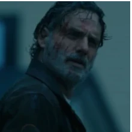
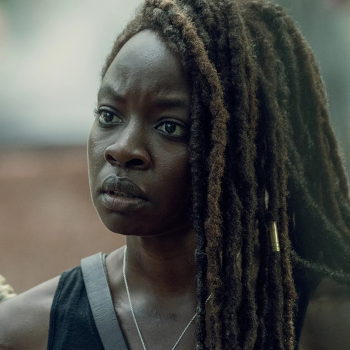
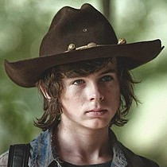
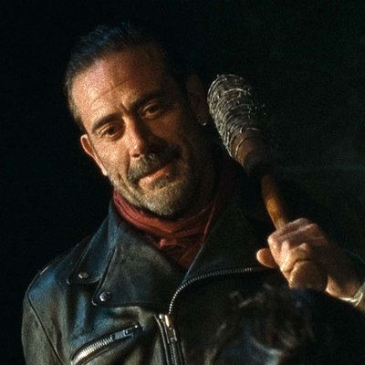
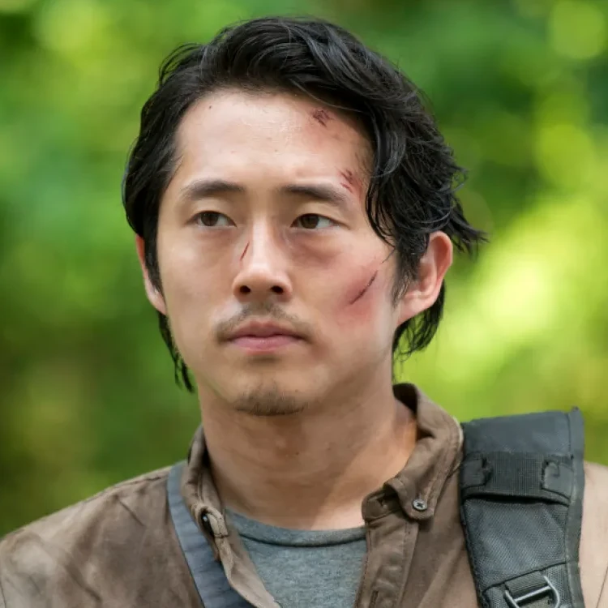

Rick Grimes
Rick Grimes é o protagonista principal de "The Walking Dead", interpretado por Andrew Lincoln. Ele começa a série como um xerife adjunto na pequena cidade de King County, Geórgia, que é baleado e entra em coma. Quando desperta... Saiba mais.
Michonne Hawthorne
Michonne é introduzida na terceira temporada de "The Walking Dead" como uma guerreira solitária empunhando uma katana. Interpretada por Danai Gurira, ela rapidamente se torna uma das personagens mais icônicas da série. Michonne é uma sobrevivente forte, inteligente e ferozmente leal. Saiba mais.
Carl Grimes
Carl Grimes, interpretado por Chandler Riggs, é o filho de Rick e Lori Grimes. Ele começa como um garoto inocente, mas ao longo das temporadas, ele é forçado a amadurecer rapidamente devido ao apocalipse zumbi. Saiba mais.
Daryl Dixon
Daryl Dixon, interpretado por Norman Reedus, é um dos personagens mais icônicos de The Walking Dead. Introduzido na primeira temporada, Daryl não existe na HQ, sendo um personagem original criado para a série. Ele começa como um caçador solitário e irmão mais novo de Merle Dixon... Saiba mais.
Negan Smith
Negan, interpretado por Jeffrey Dean Morgan, é um dos antagonistas mais icônicos de The Walking Dead. Ele é introduzido no final da sexta temporada e rapidamente se estabelece como o líder brutal dos Salvadores, um grupo que domina outras comunidades através da força e intimidação... Saiba mais
Glenn Rhee
Glenn Rhee, interpretado por Steven Yeun, é um dos personagens mais queridos de The Walking Dead. Ele é introduzido na primeira temporada como um jovem esperto e corajoso que trabalha como entregador de pizza antes do apocalipse. Glenn rapidamente se torna um membro essencial do grupo de Rick... Saiba mais.




